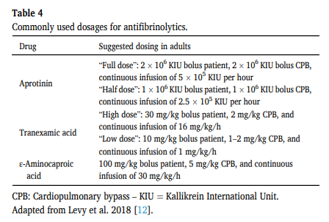

Doses do Ácido Tranexâmico
- A dose e o tempo de uso do TXA é dependente do procedimento e da instituição, pois não existem doses padronizadas para o uso intraoperatório destes agentes.
- Acima de 95% do TXA é eliminado pelos rins. A dose do TXA deve ser reduzida em pacientes nefropatas ou com insuficiência renal moderada a grave. Não há necessidade de ajustes para indicações que requerem apenas 1 ou 2 doses. Para creatinina ≥1,4 as doses devem ser ajustadas de acordo com o fabricante.
- Não é necessário ajuste de dose na insuficiência hepática.
Clique na imagem para expandir e veja a análise de doses.
